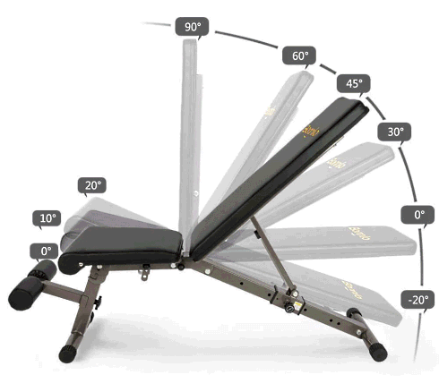

The incline bench press is a compound exercise that primarily targets the upper chest muscles, but also engages the front shoulders and triceps. The movement is typically performed on an incline bench raised at an angle of about 30 to 45 degrees.
HOW TO DO:

By following these tips and tricks for perfect form, you can maximize your gains while minimizing your risk of injury. Remember to always start with light weights and gradually increase the load as your strength and technique improve. Here are the steps to perform a bench press:
- Set up the incline bench at the desired angle. (30 to 45 degrees)
- Load the barbell with an appropriate weight for your fitness level and goals.
- Lie down on the bench with your feet firmly on the ground and your head resting on the bench.
- Grab the barbell with a grip slightly wider than shoulder-width apart.
- Unrack the barbell and bring it down to your upper chest, with your elbows flared out to the sides.
- Press the barbell back up to the starting position, exhaling as you push.
- Repeat for the desired number of reps.
Note: It is important to maintain proper form throughout the exercise to avoid injury and get the most out of the movement. Keep your core tight, your back flat against the bench, and your feet firmly planted on the ground. Avoid bouncing the bar off your chest or arching your back excessively. Start with a lighter weight and gradually increase as your strength improves.
BENEFITS
- Builds upper body strength: Incline barbell bench press is a compound upper body exercise that contributes to the movement of multiple joints and muscles. As a variant of the flat bench press, it is considered one of the best exercises for building a stronger and larger upper body.
- Targets the upper chest: The incline bench press targets the upper portion of the chest muscles, which is an area that can be difficult to target with other exercises. If you think your upper chest muscles are not developing, you can include the incline bench press movement in your programs.
- Improves bench press performance: Incorporating the incline bench press into your workout routine can help improve your bench press performance, as it targets some of the same muscles used in the traditional bench press.
- Overall, the incline bench press is a versatile exercise that offers several benefits for those looking to build upper body strength and muscle size. However, as with any exercise, it is important to perform it with proper form and gradually increase the weight as your strength improves.
WHAT IS THE BEST ANGLE FOR INCLINE BENCH PRESS?
At a high incline angle, such as 45 to 60 degrees, the emphasis is shifted more towards the front shoulders, while at a lower incline angle of 30 to 45 degrees, the emphasis is shifted towards the clavicular head of the chest muscles. However, most fitness experts recommend an incline angle of around 30 to 45 degrees for targeting the upper chest muscles. It is certain that an angle of 30-45 degrees is required for the better development of the upper chest muscles, but there are still disputes between the two. Variability of the angle of inclination can make different muscles work Therefore, the correct sitting position is the most important element for the upper chest muscle to work.
One study concluded that the 30-degree angle was the best, while another research concluded that the best result was 45 degrees. Even though the studies cause confusion, the truth is that both results are effective. The best angle for incline bench press may vary depending on individual goals and preferences.
MUSCLES WORKED
The bench press is primarily a compound exercise that targets the pectoralis major, specifically the sternal head, as the main muscle group worked. However, it also engages several other muscle groups in the upper body as synergists and dynamic stabilizers. The anterior deltoids, or front shoulder muscles, are a synergist muscle group that assist the chest muscles in the bench press. The triceps, located on the back of the upper arm, are also synergists that assist in extending the arm during the exercise. The clavicular head of the pectoralis major, located near the collarbone, is another synergist muscle group that helps to stabilize the shoulder joint and assist in pressing movements. In addition, the biceps brachii, located on the front of the upper arm, serve as dynamic stabilizers during the bench press. They help to stabilize the shoulder joint and maintain proper form during the exercise.
- Chest
- triceps
- Shoulders